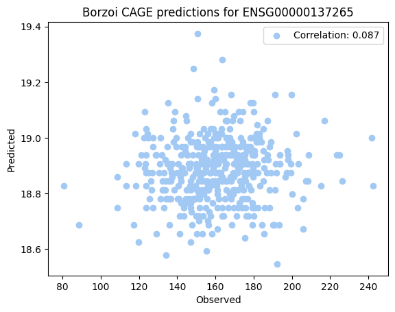
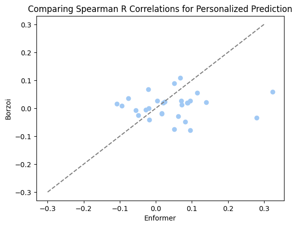
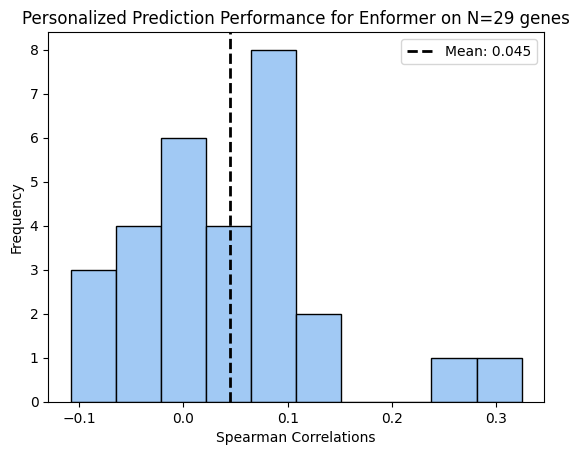
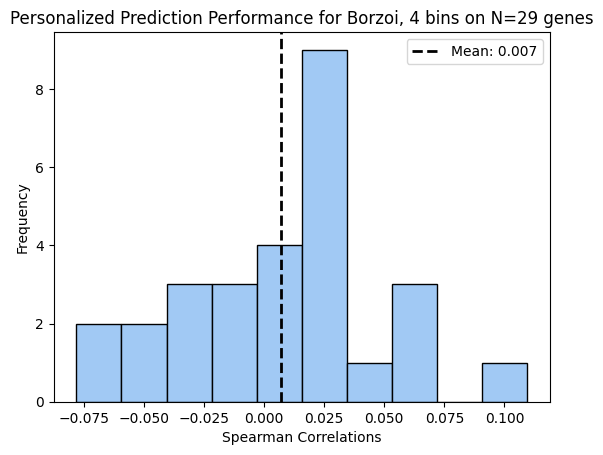

import pandas as pd
enformer_corr_df = pd.read_csv("enformer_geuvadis_correlations.csv").dropna()
hg38_annot = hg38_annot = pd.read_csv("/home/s1mi/enformer_rat_data/annotation/hg38.gene.txt", sep="\t", index_col = "external_gene_name")
genes = set(enformer_corr_df['gene_names']).intersection(hg38_annot.index)
genes_annot = hg38_annot.loc[list(genes)]
sample_genes = genes_annot.sample(n=100)Based off the limited results from personalized prediction across GEUVADIS individuals (N=455), I conclude that Borzoi does not outperform Enformer in predicting cross-population variation in gene expression. At the very bottom, I found that for most genes, Enformer had the best cross-population predictions out of all Borzoi estimates (from varying CAGE TSS window sizes).
intervals = []
for gene, annot in sample_genes.iterrows():
interval = f"chr{annot['chromosome_name']}_{annot['transcription_start_site']}_{annot['transcription_start_site']}"
intervals.append(interval)with open("intervals.txt", "w") as f:
f.write("\n".join(intervals))Submit PBS Job
#!/bin/bash
#PBS -A AIHPC4EDU
#PBS -q preemptable
#PBS -l walltime=6:00:00
#PBS -l select=2:ncpus=64:ngpus=16
#PBS -l filesystems=home:eagle
#PBS -N borzoi_across_geuvadis_parallel
module load conda
conda activate borzoi
cd /home/s1mi/Github/deep-learning-in-genomics/posts/2023-10-20-borzoi-vs-enformer-personalized-prediction
python3 personalized_prediction.py \
--intervals_file intervals.txt \
--fasta_file /home/s1mi/borzoi_tutorial/hg38.fa \
--vcf_dir /grand/TFXcan/imlab/data/1000G/vcf_snps_only \
--individuals_file individuals.txt \
--model_dir /home/s1mi/borzoi_tutorial \
--output_dir /eagle/AIHPC4Edu/sabrina/borzoi-personalized-predictionsimport pandas as pd
import numpy as np
import os
import h5py
from scipy import stats
import seaborn as sns
import matplotlib.pyplot as plt
hg38_annot = pd.read_csv("/home/s1mi/enformer_rat_data/annotation/hg38.gene.txt", sep="\t", index_col="ensembl_gene_id")
seq_len = 524288
seq_out_len = 523264
predictions_dir = "/eagle/AIHPC4Edu/sabrina/borzoi-personalized-predictions"
with open("individuals.txt", "r") as f:
individuals = f.read().splitlines()
with open("intervals.txt", "r") as f:
intervals = f.read().splitlines()[:20] # test on first few genesgene_list = []
for interval in intervals:
split_interval = interval.split("_")
chr = split_interval[0][3:]
tss = int(split_interval[1])
gene = hg38_annot.index[(hg38_annot['chromosome_name'] == chr) & (hg38_annot['transcription_start_site'] == tss)]
gene_list.append(gene.item())CAGE_dict = {gene: [] for gene in gene_list}
for index, gene in enumerate(gene_list):
interval = intervals[index]
for individual in individuals:
predictions_file = os.path.join(predictions_dir, individual, f'{interval}_predictions.h5')
if os.path.exists(predictions_file):
with h5py.File(predictions_file, "r") as hf:
haplo1 = np.mean(hf['haplotype1'][:, 3:7, :])
haplo2 = np.mean(hf['haplotype2'][:, 3:7, :])
prediction = (haplo1 + haplo2)/2
CAGE_dict[gene].append(prediction)
else:
CAGE_dict[gene].append(np.nan)geuvadis_gex = pd.read_csv("/lus/grand/projects/TFXcan/imlab/data/1000G/expression/GD462.GeneQuantRPKM.50FN.samplename.resk10.txt.gz", sep="\t")
geuvadis_gex['TargetID'] = geuvadis_gex['TargetID'].apply(lambda gene: gene.split('.')[0])
geuvadis_gex.set_index('TargetID', inplace=True)expr_dict = {}
for gene in gene_list:
observed = pd.to_numeric(geuvadis_gex.loc[gene][individuals])
expr_df = pd.DataFrame({'Observed': observed, "Predicted": CAGE_dict[gene]}, index = individuals)
expr_dict[gene] = expr_df.dropna()pearson_corr_by_gene = pd.DataFrame(columns=["Pearson R", "P-value"], index = gene_list)
for gene in gene_list:
corr, pval = stats.pearsonr(expr_dict[gene]["Observed"], expr_dict[gene]["Predicted"])
pearson_corr_by_gene.loc[gene] = [corr, pval]spearman_corr_by_gene = pd.DataFrame(columns=["Spearman R", "P-value"], index = gene_list)
for gene in gene_list:
corr, pval = stats.spearmanr(expr_dict[gene]["Observed"], expr_dict[gene]["Predicted"])
spearman_corr_by_gene.loc[gene] = [corr, pval]colors = sns.color_palette("pastel")
gex_df = expr_dict['ENSG00000137265']
corr, pval = stats.pearsonr(gex_df['Observed'], gex_df['Predicted'])
plt.scatter(gex_df['Observed'], gex_df['Predicted'], marker='o', color=colors[0], label=f"Correlation: {corr:.3f}")
# Add labels and title
plt.xlabel("Observed")
plt.ylabel("Predicted")
plt.title("Borzoi CAGE predictions for ENSG00000137265")
# Show the plot
plt.legend()
plt.show()
ENSG00000137265 was the best performing gene (both for Spearman and Pearson R) for Borzoi’s personalized prediction.
Compare Correlations to Enformer
enformer_corr_df = pd.read_csv("enformer_geuvadis_correlations.csv").dropna()
enformer_corr = []
for gene in gene_list:
gene_name = hg38_annot.loc[gene]['external_gene_name']
corr = enformer_corr_df['ge'][enformer_corr_df['gene_names'] == gene_name]
enformer_corr.append(corr.item())spearman_corr_by_gene["Enformer"] = enformer_corr
spearman_corr_by_model = spearman_corr_by_gene.rename(columns={"Spearman R": "Borzoi"}).drop(columns=["P-value"])spearman_corr_by_model| Borzoi | Enformer | |
|---|---|---|
| ENSG00000176058 | -0.005758 | -0.027832 |
| ENSG00000156931 | -0.075927 | 0.051405 |
| ENSG00000118804 | 0.027522 | 0.004061 |
| ENSG00000076924 | 0.058653 | 0.324224 |
| ENSG00000167562 | -0.027883 | 0.062367 |
| ENSG00000125730 | 0.01161 | 0.071894 |
| ENSG00000166562 | -0.078023 | 0.095746 |
| ENSG00000007171 | 0.026967 | 0.069849 |
| ENSG00000048544 | -0.034453 | 0.279909 |
| ENSG00000114670 | 0.027222 | 0.095964 |
| ENSG00000143322 | 0.022585 | 0.024750 |
| ENSG00000137265 | 0.109473 | 0.067878 |
| ENSG00000161265 | 0.019875 | 0.087932 |
| ENSG00000170482 | -0.048753 | 0.081875 |
| ENSG00000182700 | 0.055881 | 0.114932 |
| ENSG00000253710 | -0.0004 | -0.019796 |
| ENSG00000087008 | 0.016689 | -0.107988 |
| ENSG00000198951 | 0.034848 | -0.076728 |
| ENSG00000102763 | -0.018858 | 0.015898 |
| ENSG00000205571 | -0.041836 | -0.018890 |
colors = sns.color_palette("pastel")
plt.scatter(spearman_corr_by_model['Enformer'], spearman_corr_by_model['Borzoi'], marker='o', color=colors[0])
line = np.linspace(-0.3, 0.3)
plt.plot(line, line, label='y = x', color='gray', linestyle='--')
# Add labels and title
plt.xlabel("Enformer")
plt.ylabel("Borzoi")
plt.title("Comparing Spearman R Correlations for Personalized Prediction")
plt.show()
Bin Sizing
We used a 4 bin window centered at the TSS for each CAGE computation, we want to see which bin width gives the best estimate.
CAGE_dicts = [{gene: [] for gene in gene_list} for i in range(5)]
for index, gene in enumerate(gene_list):
interval = intervals[index]
for individual in individuals:
predictions_file = os.path.join(predictions_dir, individual, f'{interval}_predictions.h5')
if os.path.exists(predictions_file):
with h5py.File(predictions_file, "r") as hf:
for i in range(5):
haplo1 = np.mean(hf['haplotype1'][:, 4-i:6+i, :])
haplo2 = np.mean(hf['haplotype2'][:, 4-i:6+i, :])
prediction = (haplo1 + haplo2)/2
CAGE_dicts[i][gene].append(prediction)
else:
for i in range(5):
CAGE_dicts[i][gene].append(np.nan)
spearman_corr_by_bin_size = pd.DataFrame({"Enformer": enformer_corr}, index=gene_list)
for i in range(5):
results =[]
for gene in gene_list:
observed = pd.to_numeric(geuvadis_gex.loc[gene][individuals])
predicted = CAGE_dicts[i][gene]
corr, _ = stats.spearmanr(observed, predicted)
results.append(corr)
spearman_corr_by_bin_size[f'Borzoi, {2*(i+1)} bins'] = resultsdef histogram(x, title):
plt.hist(x, bins=10, edgecolor='black', color=colors[0]) # 'bins' determines the number of bins or bars
plt.title(title)
plt.xlabel('Spearman Correlations')
plt.ylabel('Frequency')
mean = np.mean(x)
plt.axvline(mean, color='black', linestyle='dashed', linewidth=2, label=f'Mean: {mean:.3f}')
plt.legend()
# Display the plot
plt.show()for column in spearman_corr_by_bin_size:
n = 20
x = spearman_corr_by_bin_size[column]
histogram(x, title=f'Personalized Prediction Performance for {column} on N={n} genes')


model_perf_dict = {column: 0 for column in spearman_corr_by_bin_size}
for index, row in spearman_corr_by_bin_size.iterrows():
best_model = spearman_corr_by_bin_size.loc[index].idxmax()
model_perf_dict[best_model] += 1
model_abs_perf_dict = {column: 0 for column in spearman_corr_by_bin_size}
for index, row in spearman_corr_by_bin_size.iterrows():
best_model = spearman_corr_by_bin_size.abs().loc[index].idxmax()
model_abs_perf_dict[best_model] += 1print("Highest Correlation Model:")
print(model_perf_dict)
print("Highest Absolute Valued Correlation Model:")
print(model_abs_perf_dict)Highest Correlation Model:
{'Enformer': 13, 'Borzoi, 2 bins': 3, 'Borzoi, 4 bins': 1, 'Borzoi, 6 bins': 2, 'Borzoi, 8 bins': 1, 'Borzoi, 10 bins': 0}
Highest Absolute Valued Correlation Model:
{'Enformer': 13, 'Borzoi, 2 bins': 2, 'Borzoi, 4 bins': 1, 'Borzoi, 6 bins': 1, 'Borzoi, 8 bins': 2, 'Borzoi, 10 bins': 1}